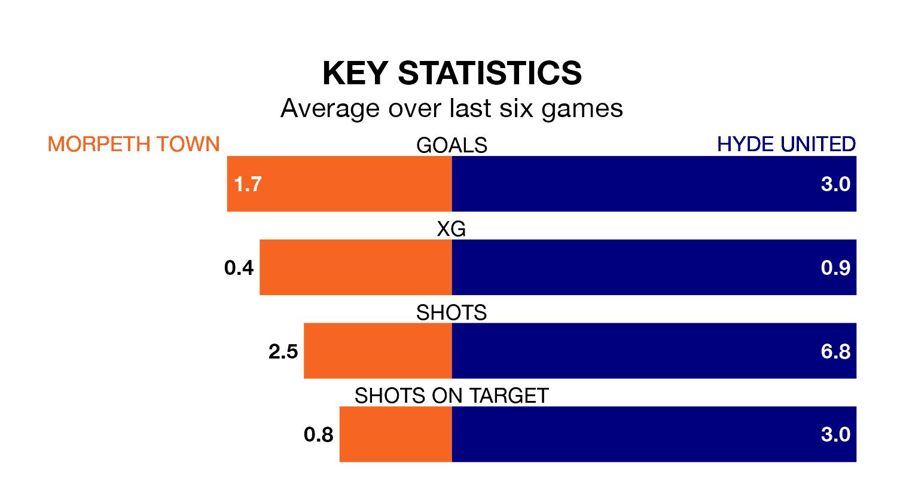

Hyde United visit Morpeth Town on Saturday on the back of three consecutive wins in Northern Premier League.
Hyde have picked up 14 points from their last six games, and they face a Morpeth side who drew their last match, and have collected 11 points from the last possible 18.
With 52 goals in 27 games so far this season, Morpeth are scoring more than average in the league with 1.9 goals per game. And they are conceding at an average rate, letting in 47 goals at a rate of 1.7 per game.
Hyde are also above average scorers, with 1.9 goals per game, compared to a league average of 1.7. They have conceded 1.1 goals per game.
In the last 10 years, Morpeth and Hyde have played each other on nine occasions. Morpeth won five of them, Hyde one, and they drew three times.
On average, Morpeth scored 2.4 goals and Hyde 1.2 in those matches.
Their last meeting was on November 25, when Hyde won 2-1 at home.
United are fourth in the table after 27 games, of which they have won 14 and drawn six, earning 48 points.
Town are six places behind the visitors in 10th, with 11 wins and eight draws putting them on 41 points.
Morpeth's last match was on January 20, a 3-3 draw against Ashton United.
Hyde beat Bradford Park Avenue 5-0 last time out, also on January 20.
Updated: 09:07 (UTC), 24/01/24